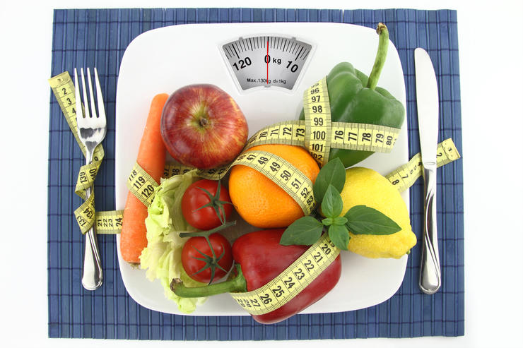

Правило 1
Соблюдения питьевого режима
Сколько необходимо выпить воды за 1 сутки?
Ответ:
Как правильно пить воду в течении дня?
Ответ:
К чему может привести недостаток воды?
Ответ:
Прогноз соблюдения питьевого режима в разных социальных образованиях
| Социальное образование | Приблезительное количевсто людей | Приблезительный объем воды |
|---|---|---|
| Семья | 4 | 3.6 |
| Жители дома | 108 | 54 |
| Жители города | 700000 | 350001 |
| Жители Украины | 42220000 | 21110001 |
| Население Земли | 7530000000 | 3765000001 |
Правило №2
СОБЛЮДЕНИЯ КАЛОРИЙНОВОГО РЕЖИМА
Сколько необходимо употреблять калорий за 1 день?
Вариабельно
Как правильно пить воду в течение дня?
Ответ: небольшими порциями в течение дня
Прогноз соблюдения питьевого режима в разных социальных образованиях
Расчитуется по формуле:
Женщины: ((10 * вес, кг) + (6,25 * рост, см) — (5 * возраст) — 161)*Физическая активность
Мужчины: ((10 * вес, кг) + (6,25 * рост, см) — (5 * возраст) + 5)*Физическая активность
Для женщин
Вес
Рост (см)
Возрст
Активность (в таблице)
Ответ:
Для мужчин
Вес
Рост (см)
Возрст
Активность (в таблице)
Ответ:
Правило №3
СОБЛЮДЕНИЯ ЗДОРОВОГО ОБРАЗА ЖИЗНИ
Зачем необходимо делать зарядку?
Ответ:
К каким последсвиям может привести отсуствие физических упражнений?
Ответ:
Как смотивировать себя на зярядку?
Ответ:
Правило №4
РЕЖИМ СНА
1.Здоровый сон
Специалисты организации Nemours, которая занимается здоровьем детей, считают, что подростки должны спать около девяти часов в стуки. Тинейджеры редко столько лежат в кровати
Как сон влияет на подрастковое здоровье?
- Помогает подростку полноценно расти и развиваться;
- Напрямую влияет на внимательность и успехи в школе;
- Помогает добиваться успехов в спорте;
Нарушения сна приводят к многочисленным сложностям со здоровьем лишний вес и проблемы с сердцем, нарушения иммунитета и эмоциональные проблемы
У подростков сбиваются биологические часы
В подростковом возрасте режим сна заметно отличается от детского или взрослого. В этот период «сбрасывается» циркадный ритм (или биологические часы), из-за чего тинейджеры засыпают и просыпаются позже. Считается, что это связано с мелатонином — гормоном, который регулирует наши биологические часы.У подростков он вырабатывается позже, чем у маленьких детей или взрослых, что приводит к тому, что ребёнок не хочет спать по вечерам.
Мешают стресс и гаджеты
Есть и ещё одна причина нарушения сна — стресс. В подростковом возрасте уребёнка больше обязанностей: ЕГЭ, репетиторы, грядущее поступление, половое созревание. Мозг постоянно возбуждён.
Также достаточно распространённая причина нарушения сна — привычка ложиться спать с телефоном или планшетом. Большое количество информации не даёт мозгу успокоиться, поэтому подростку тяжело заснуть К слову, такой же эффект вызывают поздние раунды в Fortnite или «Доту».
Как помочь подростку высыпаться?
Вот советы, которые помогают выровнять режим сна
- Ложиться спать и просыпаться в одно и то же время, даже в выходные;
- Больше физической активности, но, главное, не перед сном (нужно около трёх часов, чтобы организм успокоился);
- Пить меньше кофе, чая и энергетиков;
- Перестать пользоваться электроникой хотя бы за час до сна;
- Зажигать в комнате подростка ночник и проветривать по вечерам
Последствия недосыпа
ЕСЛИ подростки не получают положенных 3-10 часов сна каждую ночь, они могут столкнуться со многими неприятными последствиями, такими как
- Депрессия. Согласно исследованиям, молодые люди, которые ложатся позже, более склонны к развитию депрессии и мыслям о самоубийстве. В мозгу, похоже, существует связь между сном и депрессией.
- Плохие оценки. У подростков, которые не высыпаются, обычно появляются проблемы с памятью и школьной успеваемостью.
- Поведение. От нехватки сна может снижаться внимание, как результат — гиперактивность и новые скандалы.
- Дорожно-транспортные происшествия. У сонного подростка, как правило, замедленная реакция, поэтому он рискует стать участником ДТП.
| Член семьи | Возраст | Ложится спать | Встает | Всего спит | Должен спать | Вывод |
|---|---|---|---|---|---|---|
| Брат | 14 | 21ч | 7ч | 9ч | 10ч | Все хорошо |
| Я | 14 | 21ч | 7ч | 9ч | 10ч | Все хорошо |
| Мама | 42 | 23ч | 6ч | 7ч | 8ч | Все хорошо |
| Папа | 42 | 23ч | 5ч | 7ч | 8ч | Все хорошо |

Правило 5
Что такое хронотип?
Хронотип - это характер организации суточных (циркадных) биоритмов человека.
Хронотип отражает суточную динамику функциональной активности различных органов и систем организма (время пробуждения и засыпания, работоспособность, 24-часовой риты артериального давления и др.)
В зависимости от активности человека в то или иное время суток выделяют 3 хронотипа
- «аворонкиэк» - утренний тип;
- «голуби» - дневной тип;
- «совы» - вечерний тип;
Психофизиологические различия утреннего и вечернего типа
| Параметр | "Жаворонок" | "Сова" |
|---|---|---|
| Время пробуждения | 4.00-6.00 | 8.00-10.00 |
| Время засыпания | 20.00-22.00 | 24.00-2.00 |
| Пик активности | 8.00-10.00 | после 16.00 |
| Доминирующее полушария мозга | Левое | Правое |
| Творческая активность | Меньше | Больше |
Выявление хронотипа работоспособности человека (тест О.Остберга)
Трудно ли вам вставать рано утром?
Если у вас есть возможность выбора, в какое время вы бы ложились спать?
Какой завтрак вы предпочитаете в течение первого часа после пробуждения?
Если вспомнить ваши последние размолвки на работе и дома, когда они преимущественно происходили?
От чего легче отказаться:
Как точно вы рассчитываете время в течение 1 минуты?
Как легко вы можете изменить привычки, связанные с едой, во время отпуска?
Если рано утром предстоят важные дела, насколько раньше вы ложитесь спать?
Если вы ложитесь спать в 23.00, то какова степень вашей усталости?
Какова степень вашей зависимости от будильника, если утром вы должны встать в определенное время?
Как вы деятельны в первые полчаса после утреннего вставания?
Вы решили заниматься физкультурой .Ваш друг предложил заниматься дважды в неделю, по 1 часу утром, между 7 и 8 часами утра. Будет ли это благоприятным временем для вас?
Вам предстоит какая-либо работа или отъезд ночью, между 4 и 6 часами. На следующий день у вас нет никаких обязанностей .Какую из следующих возможностей вы выберете?
Иногда говорят “утренний человек ” и “вечерний человек”. К какому типу вы себя относите ?
ЧУ вас возникло решение серьезно заниматься закаливанием организма. Друг предложил делать это дважды в неделю, по 1 часу , между 22 и 23 часами вечера. Как вас устраивает это время?
Правило №5
Режим труда и отдыха
«Метод помидора»
Всего 5 простых шагов:
- 1. Определите ичетко сформулируйте задачу. Очень важно понимать, что и зачем вы собираетесь делать следующие 25 минут
- 2. Заведите таймер на 25 минут. Помогаетчему 25? Согласно исследованиям психологов, человек может концентрироваться на чем-то максимум 50 минут. 25 минут — это один «помидор». Один помидор беспрерывной работы
- 3. Приступайте к работе, пока не зазвонит таймер. Дайте себе слово, не отвлекаться от задачи все 25 минут, Ни на звонки, ни на сообщения или письма, ни на коллег. Только работа над поставленной задачей
- 4. Сделайте перерыв на 5 минут. Можно ответить на пропущенные звонки и письма, а лучше встать и размяться.
- 5. После 4 помидоров сделайте большой перерыв.
Правило 7
Эффективное планирование
>Многие вещи лучше всего делать прямо сегодня и сейчас, однако начать планировать лучше всего в начале недели или месяца и делать это регулярно. Впрочем, если вы фрилансер, то можете начать сейчас. Существуют сотни самых разных методик и приложений, которые позволят вам эффективно планировать свое время.
Важность планирования
Если вы планируете эффективно и с умом, то это умение позволяет вам:
- Понимать, за какое время реально достичь определенной цели.
- Убеждаться, что у вас есть достаточно времени для выполнения самых важных задач.
- Планировать время на случай непредвиденных обстоятельств.
- Избегать брать на себя такое количество дел, которые вы не сможете выполнить.
- Упорно работать над своими личными и карьерными целями.
- Иметь достаточно времени на семью, друзей, саморазвитие и хобби.
- Достигать баланса в жизни.
Правило 8
Активация мозга
ГИМНАСТИКА ДЛЯ МОЗГА – ТРЕНИРУЕМ УМ
Мы привыкли, что можно тренировать тело — выполнять физические упражнения, ходить в тренажерный зал или хотя бы делать зарядку по утрам. Но давно доказано, что мозг тоже поддается тренировке. Что самое интересное, тренировать его можно не только на ментальном уровне, но и на физическом, выполняя специальные упражнения. Звучит фантастически? Возможно, но этому есть вполне реальное объяснение.
ТРЕНИРОВКА МОЗГА - ПРАВДА ИЛИ МИФ?
определенные движения тела влияют на состояние мозга. Следовательно, если выполнять специально подобранные упражнения, мозг можно развивать. И в этом нет ничего удивительного, ведь организм человека - это целостная система, в которой тело и ум тесно взаимосвязаны.
Американские исследователи Гейл и Пойл Деннисон пошли дальше своих коллег и разработали целую программу интеллектуального развития — нейрогимнастику, то есть гимнастику для мозга.
Нейрогимнастика - это комплекс упражнений, направленных на активацию естественных механизмов работы мозга через выполнение физических движений. Упражнения объединяют движение и мысль, то есть активизируют и задействуют связи между системами «тело» и «ум».
ПОЛОЖИТЕЛЬНЫЕ ЭФФЕКТЫ НЕЙРОГИМНАСТИКИ
- лучшее восприятие и запоминание новой информаци;
- улучшение состояния нервной системы;
- развитие мелкой моторики, памяти, внимания, речи;
- синхронизация работы правого и левого полушарий головного мозга. Согласно подсчетам, лишь 10 % населения планеты задействуют правое «творческое» полушарие мозга наравне с левым «логическим». Но также доказано, что максимального умственного развития можно достичь только при скоординированной работе сразу 2 полушарий. Если вы хотите вырастить своего ребенка умным и самодостаточным, приложите все усилия для гармоничного развития его мозга.
КАК РАЗВИТЬ ЛЕВОЕ ПОЛУШАРИЕ
Левое полушарие отвечает за логическое и рациональное мышление и в силу нашего стиля жизни доминирует практически у всех людей, за исключением левшей. Система образования построена на развитии именно левого полушария, то есть необходимые навыки ребенок получает уже в школе. Но есть несколько способов, как ускорить этот процесс:
- ежедневно решать математические задачи разной сложности;
- тренироваться в задачках на логику и смекалку;
- разгадывать ребусы, кроссворды, шарады и т.д.
КАК РАЗВИТЬ ПРАВОЕ ПОЛУШАРИЕ
Установлено, что правое полушарие, отвечающее за творческое и образное мышление, доминирует у людей с рождения. Однако в процессе обучения происходит перекос в сторону левого полушария, которое постепенно подавляет правое. У левшей правое полушарие все равно остается доминирующим, но вот другим детям полезно развивать его специально:
- посещать творческие мероприятия (выставки, музеи, галереи и т.д.);
- сочинять стихотворения или рассказ;
- задействовать левую руку при выполнении привычных действий;
- визуализировать различные образы;
- воспроизводить в уме знакомые звуки, запахи, ощущения.
Но главное условие всестороннего развития ребенка - тренировка и налаживание связи между полушариями. Для этого и нужны нейрогимнастические упражнения. Наибольший эффект от их выполнения наблюдается у детей от 7 до 12 лет - в этом возрасте они наиболее активны и любознательны.
Правило 9
Эмоциональная поддержка
Когда особо необходима поддержка? Поддержку можно и нужно оказывать человеку, который находится во взрослой и проактивной позиции, но имеет недостаточно эмоциональных (нергетических) ресурсов, чтобы самостоятельно справиться с ситуацией. Но особо важна она